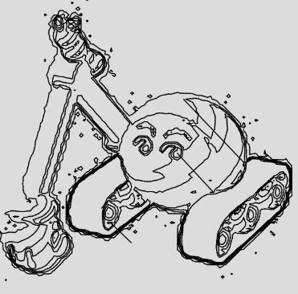

在〈Marching squares（一）〉中看到的過程，可以分為幾個任務：
- 依指定值將資料標示為 0 與 1
- 建立細胞資料（四個座標點與角落值加總）
- 根據加總後的角落值建立等值線
為了方便使用者，最初的資料可使用二維陣列提供，例如像是以下的資料：
const values = [
[1, 1, 1, 1, 1],
[1, 2, 3, 2, 1],
[1, 3, 3, 3, 1],
[1, 2, 3, 2, 1],
[1, 1, 1, 1, 1]
];
首先依指定值將資料標示為 0 與 1，因為是二元資料，這邊就以 true、false 表示，並且根據陣列索引建立對應的向量，因為每格資料，將作為細胞的一角，函式就取名為 mapToCorners 吧！
function mapToCorners(values, threshold) {
const corners = []
for(let r = 0; r < values.length; r++) {
const row = [];
for(let c = 0; c < values[r].length; c++) {
row.push({
vt : createVector(c, r, values[r][c]),
belowThreshold: values[r][c] < threshold
});
}
corners.push(row);
}
return corners;
}
再來建立細胞資料，每個細胞資料會包含四個角落的向量，以及角落值的加總：
function flatMapToCells(corners) {
const cells = [];
for(let r = 0; r < corners.length - 1; r++) {
for(let c = 0; c < corners[r].length - 1; c++) {
cells.push({
vts: [
corners[r][c].vt,
corners[r + 1][c].vt,
corners[r + 1][c + 1].vt,
corners[r][c + 1].vt
],
cornerCase: cornerCase([
corners[r][c],
corners[r + 1][c],
corners[r + 1][c + 1],
corners[r][c + 1]
])
});
}
}
return cells;
}
function cornerCase(corners) {
return (corners[0].belowThreshold ? 8 : 0) +
(corners[1].belowThreshold ? 1 : 0) +
(corners[2].belowThreshold ? 2 : 0) +
(corners[3].belowThreshold ? 4 : 0);
}
有了細胞資料之後，接下來就是建立等值線了，這邊需要的是細心，小心座標點別對應錯誤了：
function isolines(cell, threshold) {
const vts = cell.vts;
switch(cell.cornerCase) {
case 0: case 15:
return [];
case 1: case 14:
return [[inter_pt(vts[0], vts[1], threshold), inter_pt(vts[1], vts[2], threshold)]];
case 2: case 13:
return [[inter_pt(vts[1], vts[2], threshold), inter_pt(vts[2], vts[3], threshold)]];
case 3: case 12:
return [[inter_pt(vts[0], vts[1], threshold), inter_pt(vts[2], vts[3], threshold)]];
case 4: case 11:
return [[inter_pt(vts[2], vts[3], threshold), inter_pt(vts[0], vts[3], threshold)]];
case 5:
var cp = center(vts);
return cp.z < threshold ?
[
[inter_pt(vts[0], vts[1], threshold), inter_pt(cp, vts[1], threshold), inter_pt(vts[1], vts[2], threshold)],
[inter_pt(vts[2], vts[3], threshold), inter_pt(cp, vts[3], threshold), inter_pt(vts[0], vts[3], threshold)],
] :
[
[inter_pt(vts[0], vts[1], threshold), inter_pt(cp, vts[0], threshold), inter_pt(vts[0], vts[3], threshold)],
[inter_pt(vts[1], vts[2], threshold), inter_pt(cp, vts[2], threshold), inter_pt(vts[2], vts[3], threshold)],
];
case 6: case 9:
return [[inter_pt(vts[1], vts[2], threshold), inter_pt(vts[0], vts[3], threshold)]];
case 7: case 8:
return [[inter_pt(vts[0], vts[1], threshold), inter_pt(vts[0], vts[3], threshold)]];
case 10:
var cp = center(vts);
return cp.z < threshold ?
[
[inter_pt(vts[0], vts[1], threshold), inter_pt(cp, vts[0], threshold), inter_pt(vts[0], vts[3], threshold)],
[inter_pt(vts[1], vts[2], threshold), inter_pt(cp, vts[2], threshold), inter_pt(vts[2], vts[3], threshold)],
] :
[
[inter_pt(vts[0], vts[1], threshold), inter_pt(cp, vts[1], threshold), inter_pt(vts[1], vts[2], threshold)],
[inter_pt(vts[2], vts[3], threshold), inter_pt(cp, vts[3], threshold), inter_pt(vts[0], vts[3], threshold)],
];
}
}
// 在 v1、v2 之間，以插值方式找到 threshold 對應的座標點
function inter_pt(v1, v2, threshold) {
return p5.Vector.lerp(v1, v2, (threshold - v1.z) / (v2.z - v1.z));
}
// 計算四個向量的中點
function center(vts) {
return p5.Vector.add(vts[0], vts[1]).add(vts[2]).add(vts[3]).div(4);
}
這邊可以看到，雖然角落加總會有 16 個值，各有其對應的等值線畫法，不過就計算座標點來看，其實有些正好是相同的計算方式，因此實作時可以將案例合併。
這麼一來，就可以建立一個 contours 函式來取得全部的等值線：
function contours(values, threshold) {
const corners = mapToCorners(values, threshold);
return flatMapToCells(corners)
.map(cell => isolines(cell, threshold))
.filter(lines => lines.length > 0)
.flat();
}
來看看結合一下〈Perlin 雜訊〉畫出的等值線，其中綠色表示比較低、紅色表示較高：
這也不只是用在製作等高線之類的場合，例如，結合〈像素控制〉中談到將圖片轉灰階，就可以用來製作這樣的圖案：
